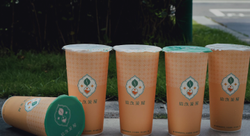

冷飲類
草根豐味東海店
唯一從路邊攤喝到開店面的東海飲料。粉角綠豆沙鮮乳裝得很紮實，非常綿密好喝，真的是喝過最好喝的綠豆沙鮮奶。
- 營業時間：11:30AM–22:00PM．不定時公休
- 地 址：台中市龍井區新興路3-1號

十九茶屋
東海店的店員很正價格很實惠，五星好評!
- 營業時間：10:00AM–22:30PM．不定時公休
- 地 址：台中市龍井區台灣大道五段3巷70號
- 電 話：04 2652 6002 
五桐號
很推薦荔枝口味系列 蜜桃口味系列也很吸引味蕾~
- 營業時間：10:00AM–22:00PM．不定時公休
- 地 址：台中市龍井區新興路1巷1-1號
- 電話：04 2631 1401

東海何媽媽冰店
巨無霸草莓冰好浮誇！淋上煉乳花紋猶如大理石的愛文芒果甜蜜蜜，台中冰店期間限定超大份量的人氣鮮果冰就是這一家～
- 營業時間：14:00PM–20:00PM 週日公休
- 地 址：台中市龍井區臺灣大道五段3巷6弄32號
- 電話：04 2632 8855

Copyright ©賴國峰 All Rights Reserved.